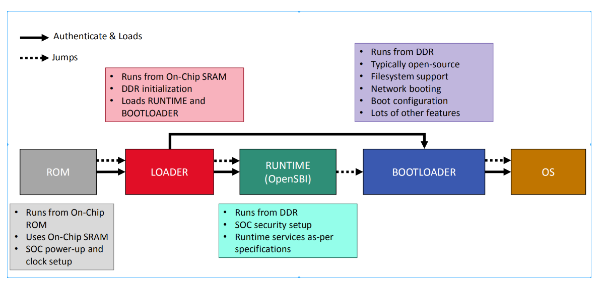
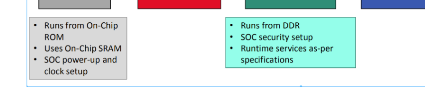

基于OpenSBI v1.3对基本boot流程做简要解析


fw_base.S
OpenSBI从这里进入，这里提供了_start符号：
.section .entry, "ax", %progbits
.align 3
.globl _start
.globl _start_warm
_start:
/* Find preferred boot HART id */
MOV_3R s0, a0, s1, a1, s2, a2
call fw_boot_hart
add a6, a0, zero
MOV_3R a0, s0, a1, s1, a2, s2
li a7, -1
beq a6, a7, _try_lottery
/* Jump to relocation wait loop if we are not boot hart */
bne a0, a6, _wait_relocate_copy_done
_try_lottery:
/* Jump to relocation wait loop if we don't get relocation lottery */
lla a6, _relocate_lottery
li a7, 1
amoadd.w a6, a7, (a6)
bnez a6, _wait_relocate_copy_done
/* Save load address */
lla t0, _load_start
lla t1, _fw_start
REG_S t1, 0(t0)